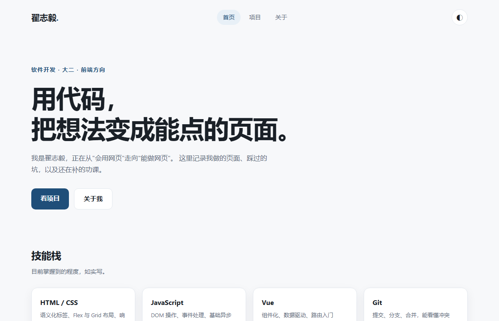
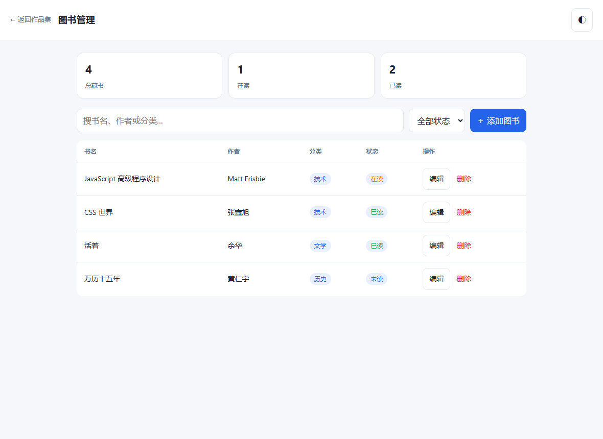
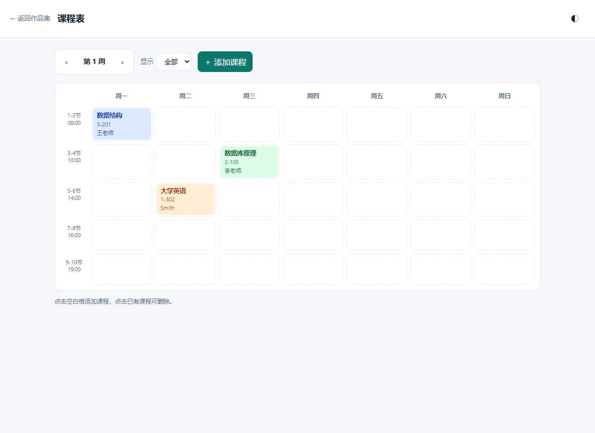

 个人作品集网站 这站本身。从零手写 HTML/CSS/JS，做了响应式布局和深色模式切换， 部署在 GitHub Pages 上。 HTML CSS JavaScript 在线预览 源码
 图书管理 课程设计。实现了增删改查、关键词搜索、状态筛选和统计， 数据存在 localStorage，刷新不丢。 原生 JS localStorage 响应式表格 在线预览 源码
 课程表小工具 支持从教务系统导入课表：网页复制、PDF、CSV 三种方式都能解析， 能识别单双周和同一时段不同周的课；右键可编辑、删除，数据本地保存。 原生 JS CSS Grid pdf.js localStorage 在线预览 源码